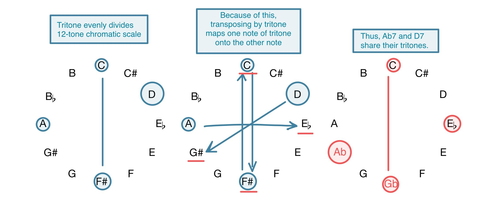
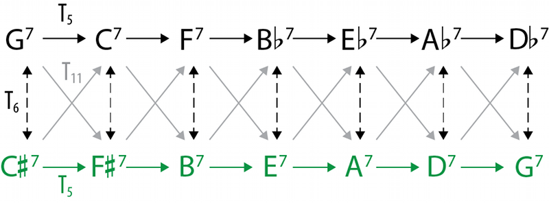
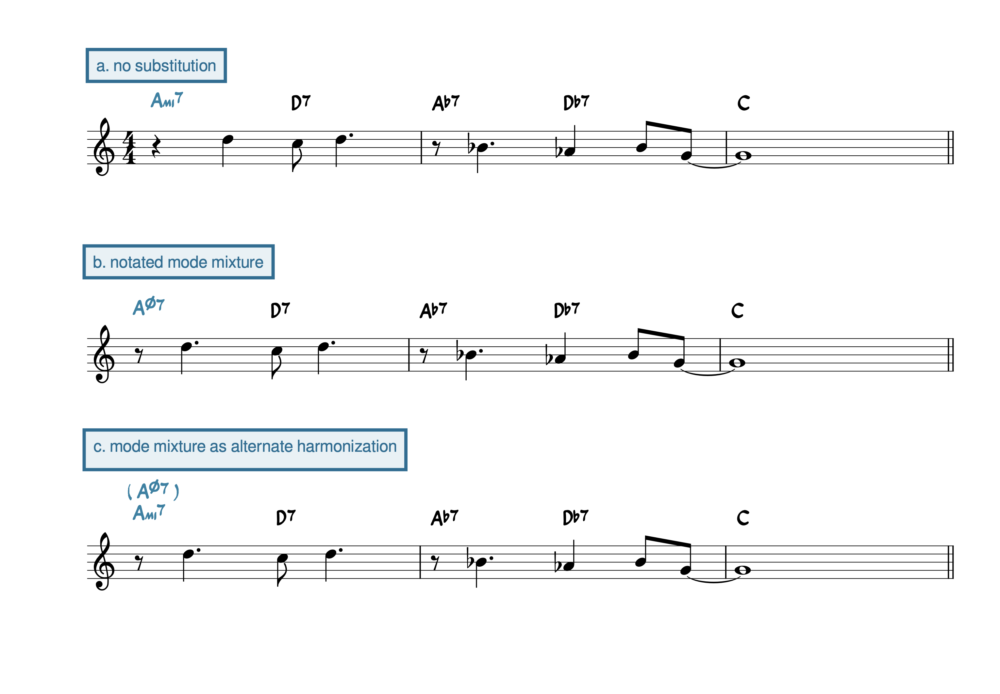

Open Music Theory：繁體中文版
替代和弦
重點整理
本章討論如何透過和弦替代，改變和弦進行。
重新詮釋熟悉的經典曲目，是爵士樂的重要基礎，因此和弦替代的概念格外重要。演奏者與編曲者可以透過替代，替常見的和弦進行增添新面貌。本章以回轉進行作為改寫的基本材料，但這些手法也能用在和弦進行的其他位置。
查看英文原文
Key Takeaways
This chapter discusses methods for altering chord progressions through chord substitution.
- A progression that moves by fifth can substitute the first chord with the dominant chord that shares the same root. This makes the first chord an applied chord to the second chord.
- Mode mixture is when a piece in a major key uses chords borrowed from the parallel minor key (or vice versa, though this is less common).
- In jazz, the most common mixture chords are substituting ii∅7 for ii7 and adding ♭9 to a V7 chord.
- The most common mixture chords, including ii∅7 and V7♭9, substitute le for la [latex](\downarrow\hat6[/latex] for [latex]\natural\hat6)[/latex].
- Tritone substitutions replace a dominant chord with another dominant chord a tritone away. The name refers both to the interval between the original and substituted chords and to the fact that the two chords share the same tritone.
Creating new interpretations of old favorite tunes is one of the cornerstones of jazz, and because of this, the concept of chord substitutions is extremely important. Substitutions provide a way for performers and arrangers to put a new spin on more well-trodden harmonic progressions. This chapter uses the turnaround as a basic progression to be altered, but these substitutions can be applied anywhere in a harmonic progression.
如〈主音化〉章所述，把副和弦與同根音的自然音和弦相互比較，是很有用的理解方式。
例1。根音以五度相連時，可以把前一和弦的性質改成屬七，使它轉為副V7。
查看英文原文
Applied Chords as Substitutions
As discussed in the Tonicization chapter, an applied chord can be productively related to the diatonic chord with which it shares a root note.
Because root motion by fifth is extremely common in jazz, there are many opportunities for performers to simply substitute the first chord in a fifth-wise chord progression with the dominant seventh built on the same root. One especially common place where this is implemented is in the turnaround, where, because each chord is related to the next by fifth, a chain of applied V7s is a common variant (Example 1).
Example 1. When a progression has root motion by fifth, the quality of the first chord can be changed to dominant seventh in order to transform it into an applied V7.
Cole Porter的〈All of You〉，本身就含有調式混合。聆聽Ella Fitzgerald的這個錄音版本，其採譜見例2；這個版本恰好在便於觀察的C大調。注意A♮（la，[latex]\hat6[/latex]）與A♭（le，[latex]\downarrow\hat6[/latex]）的交替如何吸引耳朵，為歌曲帶來感傷色彩。此處的A♭可以理解為借自同主音小調，也就是C小調；這種做法稱為調式混合。
例2。Cole Porter的〈All of You〉雖以大調主和弦為中心，卻使用小iv和弦Fmi，以及半減ii和弦D∅7。
許多歌曲像〈All of You〉一樣，原有和弦結構就包含調式混合。不過，混合和弦也能當作即興替代：把自然音進行中的和弦換成小調版本，可以改變色彩，同時保留整體和聲功能。最適合這種混合替代的音級，是把la[latex](\hat6)[/latex]改成le[latex](\downarrow\hat6)[/latex]。例如例3的回轉進行，就能選擇加入le[latex](\downarrow\hat6)[/latex]，以較豐富的和聲色彩取代原本的自然音版本。把ii7改成ii∅7，以及把G7改成G7♭9，都是爵士樂中特別常見的調式混合。
例3。涉及[latex]\mathit{\downarrow\hat6}[/latex]的混合和弦，效果尤其鮮明。同一和弦的混合版本與自然音版本，保有相同功能。
查看英文原文
Mode Mixture
"All of You" by Cole Porter is a composition that has mode mixture built into it. Listen to this recording by Ella Fitzgerald (transcribed in Example 2), conveniently in C major, and observe how the alternation between A♮ (la, [latex]\hat6[/latex]) and A♭ (le, [latex]\downarrow\hat6[/latex]) catches the ear and imbues a sense of sentimentality in the song. A♭ here can be understood as being borrowed from the parallel minor (C minor), a practice known as mode mixture.
Example 2. "All of You" by Cole Porter uses a minor iv chord (Fmi) and a half-diminished ii chord (D∅7) even though the tonic is major.
Many songs, like "All of You," have mixture built into their chord structure. But mixture chords can also work as improvised substitutions: a chord within a diatonic chord progression can be substituted with its minor-mode variant to produce a color change that won't change the overall function of the chord. A mixture substitution works best when the scale degree being inflected is la [latex](\hat6)[/latex], and is therefore being transformed into le [latex](\downarrow\hat6)[/latex]. As an example, consider the turnaround in Example 3: instead of a diatonic version, one may choose to incorporate le [latex](\downarrow\hat6)[/latex] to generate some more colorful harmonies. These particular substitutions—changing a ii7 to a ii∅7, and a G7 to a G7♭9—are particularly common uses of mode mixture in jazz.
Example 3. Mixture chords are most effective when they involve [latex]\mathit{\downarrow\hat6}[/latex]. Mixture and diatonic versions of the same chord have the same function.
{kind=link}

左：三全音把十二個半音音級等分。
中：因此，移調三全音會把原三全音的一音映到另一音。
右：所以A♭7與D7共有同一組三全音。
- 藍色D7包含D、F♯、A、C；
- 紅色A♭7包含A♭、C、E♭、G♭；
- F♯與G♭等音，C也保留。
前述替代手法也常見於流行與古典音樂；三全音替代（tritone substitution，常簡稱tritone sub）則是爵士樂的一項特色。它可以取代自然音或副屬的V7和弦。名稱中的「三全音」有兩層意義：
- 替代和弦與原和弦的根音，相距三全音。
- 兩個和弦共有同一組三全音，因此彼此相關。
例4以圖形說明這個關係：三全音把十二音級集合平分為兩半，因此整組移調三全音後，原本的三全音音級集合仍會映回自身。
實務上的原則是：屬七和弦可用根音相距三全音的另一個屬七和弦替代，保留原進行的功能。但不應把每個V7都直接換掉；相較於接往其他和弦，V7解決到I時通常最適合這項手法。在V7–I中使用三全音替代，會形成半音低音線，幫助它與附近和弦連接。辨認歌曲中三全音替代的可靠線索之一，就是它向下小二度的半音解決。
例5示範回轉進行中常見的三全音替代。
- 如前文所述，常可把自然音和弦換成同根音的副屬和弦，得到全部由V7性質和弦組成的進行；圖中上排右側就是這種配和聲。
- 接著，可以對其中的V7使用三全音替代。
- 最常見的是每隔一個和弦做一次三全音替代，形成半音低音線與平順的聲部連接，如下排的配和聲。
例5。三全音替代可以取代副屬和弦，因此在回轉這類根音以五度相連的進行中，可以先在概念上把原和弦換成副屬版本，再用三全音替代，形成半音低音線。
{kind=link}

- 黑色一列G7–C7–F7–B♭7–E♭7–A♭7–D♭7；
- 綠色一列C♯7–F♯7–B7–E7–A7–D7–G7。
- T5表示上移5個半音，等同下降完全五度後作八度等價；
- T6表示移調三全音，連接兩列同位置的替代和弦；
- T11表示上移11個半音，等同下降半音，沿灰色斜箭頭在兩列間移動。
這些下標是半音數，不是和弦級數或數字低音。
〈ii–V–I〉章用Michael McClimon（2017）建立的聲部連接空間，呈現ii–V–I圖式。他進一步把三全音替代畫成典型ii–V空間背後的一層對應空間（例6）。這段動畫示範〈Blues for Alice〉的進行，如何在含三全音替代的ii–V空間中移動。注意，三全音替代的V7之前，也接著它所屬調的ii7；這兩個和弦，都位在前景ii–V空間後方的綠色空間中。
查看英文原文
Tritone Substitutions
While the above methods of substitution are common in pop and classical styles as well, the tritone substitution ("tritone sub") is unique to jazz. Tritone subs take the place of V7 chords, either applied or diatonic. The "tritone" part of the name comes from two key roles of tritones in these substitutions:
- The substituted chord is a tritone away from the chord it is replacing.
- The chords are related because they share the same tritone.
This relationship is best explained graphically, as in Example 4: because the tritone evenly divides the twelve-tone collection, transposing by tritone maps the tritone onto itself.
Speaking practically, the bottom line is that any dominant seventh chord can be replaced by the dominant seventh chord a tritone away, and the progression still functions the same way. Not just any V7 chord should be replaced with a tritone substitution, however—this sounds best when the V7 chord is resolving to I rather than moving to any other chord. A tritone substitution in a V7–I progression yields a chromatic bass line that helps connect it to the chords nearby. In fact, the most reliable way to recognize a tritone substitution in a song is by its chromatic resolution downward by a minor second.
Example 5 shows how tritone substitutions are commonly used in the turnaround.
- As discussed above, it's common to replace the diatonic chords with applied chords that share the same root, yielding a progression consisting entirely of V7 chords—this is shown in the right-hand harmonization on the top row.
- From there, tritone substitutions can be used for any V7 chord.
- Most commonly, every other chord is replaced with a tritone sub, yielding a chromatic bass line and smooth voice leading, as in the bottom row of harmonizations.
Example 5. Because tritone substitutions can replace any applied dominant chord, in progressions moving by fifth like the turnaround, chords may first be (conceptually) substituted with their applied variants, and then tritone substitutions can be used to create a chromatic bass line.
The ii–V–I chapter visualized the ii–V–I schema within a voice-leading space constructed by Michael McClimon (2017). McClimon further visualizes the tritone substitution as a kind of shadowing space behind the typical ii–V space (Example 6). Click here to view his animation of the progression of "Blues for Alice" and its movement through the ii–V space with tritone substitutions. Notice that the tritone-substituted V7 chord is preceded by its ii7 chord, and that both chords are in the green space that McClimon places behind the foreground ii–V space.
如同裝飾和弦，替代和弦在旋律和弦譜上的呈現方式也不固定。
- 譜上可能沒寫替代和弦，由演奏者即興替換。
- 替代和弦可能已是進行的一部分，因此直接寫入和弦代號。
- 也可能把替代和弦當作另一種配和聲選項，在其和弦代號外加括號。
例7以Duke Ellington〈Satin Doll〉中由調式混合產生的ii∅7為例，示範不同標法。
{kind=link}

- a. no substitution＝未標示替代和弦；
- b. notated mode mixture＝直接記出調式混合；
- c. mode mixture as alternate harmonization＝把調式混合列為另一種配和聲選項。
第一和弦分別寫Ami7、Aø7，以及Ami7上方括號(Aø7)。
ø7表示半減七和弦，其餘和弦代號、旋律、連結線與節奏保留。
- Levine, Mark。1995。The Jazz Theory Book（《爵士樂理》）。加州佩塔盧馬：Sher Music。
- McClimon, Michael。2017。〈Transformations in Tonal Jazz: ii–V Space〉（〈調性爵士樂中的變換：ii–V空間〉）。Music Theory Online 23（1）。http://mtosmt.org/issues/mto.17.23.1/mto.17.23.1.mcclimon.html。
媒體出處與授權
- 〈鐘面音級圖〉© Megan Lavengood，採CC BY-SA（姓名標示－相同方式分享）授權。
- 〈McClimon圖10〉© Michael McClimon，採CC BY-SA（姓名標示－相同方式分享）授權。
- 〈括號標記〉© Megan Lavengood，採CC BY-NC-SA（姓名標示－非商業性－相同方式分享）授權。
查看英文原文
Substitutions in a Lead Sheet
As with embellishing chords, substitutions are not always represented the same way in a lead sheet.
- There may not be any substitution notated, and instead the performers are improvising this addition as they play.
- The substitution may be built into the chord progression and thus be notated in the chord symbols.
- The substitution may be indicated as an alternate harmonization and shown in chord symbols with parentheses around the substituted chords.
This is illustrated in Example 7, with different ways of showing a modally mixed ii∅7 chord in "Satin Doll" by Duke Ellington.
- Levine, Mark. 1995. The Jazz Theory Book. Petaluma, CA: Sher Music.
- McClimon, Michael. 2017. “Transformations in Tonal Jazz: ii–V Space.” Music Theory Online 23 (1). http://mtosmt.org/issues/mto.17.23.1/mto.17.23.1.mcclimon.html.
- Bebop composition. Asks students to build on knowledge of swing rhythms, ii–V–I, embellishing chords, and substitutions to create a composition in a bebop style.
- .pdf: Complete instructions + template
- .mscz: Template for lead sheet, template for voicings
- .docx: instructions only
- Bebop composition — audio option. Asks students to build on knowledge of swing rhythms, ii–V–I, embellishing chords, and substitutions to create a composition in a bebop style.
- Substitutions (.pdf, .mscz). Asks students to substitute chords in ii–V–I progressions and in a phrase from Cole Porter's "Let's Do It." Worksheet playlist
Media Attributions
- Clock face visualization © Megan Lavengood is licensed under a CC BY-SA (Attribution ShareAlike) license
- McClimon Figure 10 © Michael McClimon is licensed under a CC BY-SA (Attribution ShareAlike) license
- Parentheses © Megan Lavengood is licensed under a CC BY-NC-SA (Attribution NonCommercial ShareAlike) license